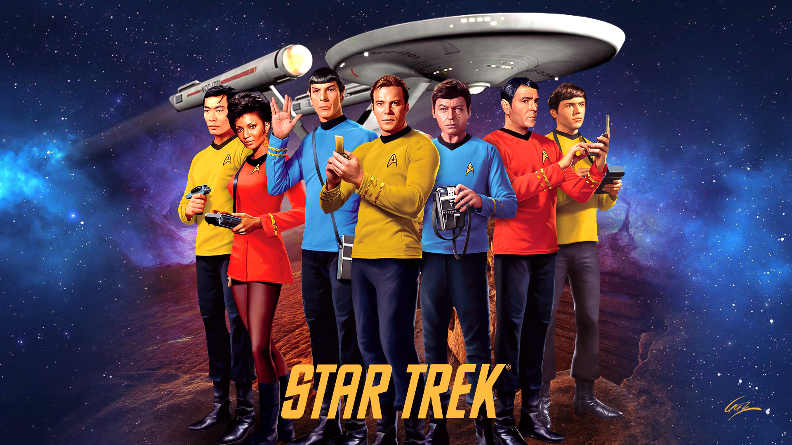

Mission to Mars
Homepagina
Over de vlucht
Ruimteschip
Restaurant menu
Wellnessruimte
- Fitnessruimte en lessen
- Bibliotheek
Vr-Holodeck
Entertainment
- Mini games
- Films & Series
- E-books & Muziek
Films en Series
